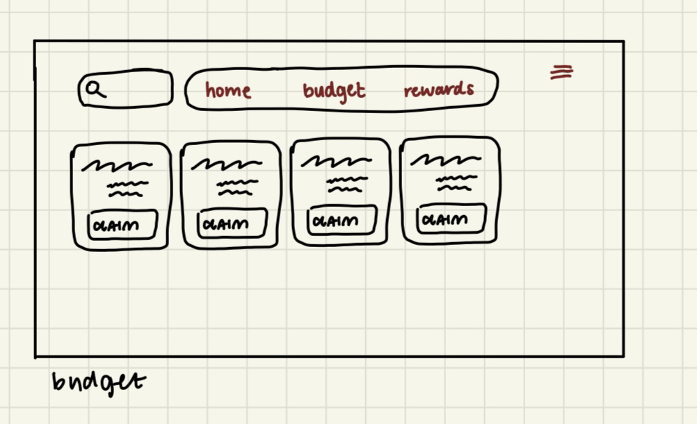

Part 3: Reading Questions
1. Advantages and Disadvantages of Sketching Wireframes
Sketching wireframes allows designers to quickly brainstorm ideas and visualize layouts without worrying about technical precision. It encourages creativity and helps in early discussions. However, sketches can lack accuracy, are harder to share remotely, and are less suitable for showing interaction or updates compared to digital tools.
2. Best Wireframing Style for My Project
A digital mid-fidelity wireframe is ideal for my project since it provides enough detail to test usability and visual hierarchy while staying flexible for revisions. Using a tool like Figma ensures consistency and helps prepare for the interactive prototype phase.
explain here
explain here